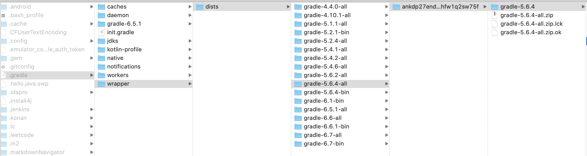

前言
本文主要梳理下 Gradle 的执行顺序及实现原理，加深对 Gradle 的理解。
开始
从常用命令着手，一般命令行构建打包 App 都会执行以下命令：
./gradlew app:assembleDebug |
那么具体是怎么执行的呢？查看下 gradlew 的源码，发现其中包含以下代码。
CLASSPATH=$APP_HOME/gradle/wrapper/gradle-wrapper.jar |
其实就是执行 gradle-wrapper.jar 中的 GradleWrapperMain#main。
// GradleWrapperMain |
首先执行 install.createDist 方法读取 gradle/wrapper/gradle-wrapper.properties 中相关配置，检查本地是否已经存在对应版本 Gradle 的 zip 包，如不存在则下载，然后进行解压；
# gradle-wrapper.properties |
注：根目录如果是 GRADLE_USER_HOME 那么实际使用的为 ~/.gradle ，因此下载的 Gradle 一般保存在 ~/.gradle/wrapper/dists/ 下。
当确认本地存在 Gradle 以后就可以调用 bootstrapMainStarter.start 执行 Gradle 构建流程。
// BootstrapMainStarter |
通过自定义 ClassLoader 加载 gradle-launcher-5.6.4.jar 中的 GradleMain 类，并反射调用其 main 方法。后续就是开启 Deamon 进程，然后通过 Socket 进行连接，并提交构建请求，这块就不展开了，最终会调用 DefaultGradleLauncher 的 executeTasks 方法。
public GradleInternal executeTasks() { |
很明显构建项目一共需要进行以下五个步骤
- prepareSettings。
- prepareProjects。
- prepareTaskExecution。
- runWork。
下面一个个进行分析
prepareSettings
在这一阶段，主要工作为
- 寻找编译执行 init 脚本。
- 寻找 settings 脚本。
- 编译 buildSrc 模块。
- 解析 gradle.properties。
- 编译执行 settings.gradle。
private void prepareSettings() { |
buildListener.buildStarted
用于通知外界构建开始，不过这时候外界不可能设置 buildListener，所以外界是无法接收到该事件的。
settingsPreparer.prepareSettings
注：settingPreparer 为 DefaultSettingPreparer 实例。
public void prepareSettings(GradleInternal gradle) { |
initScriptHandler.executeScripts
注：initScriptHandler 为 InitScriptHandler 实例。
public void executeScripts(final GradleInternal gradle) { |
方法内部首先寻找到所有配置的 init 脚本，接着对其进行编译并执行。
init 脚本存放位置为以下几个地方：
~/.gradle/init.gradle 或者 ~/.gradle/init.gradle.kts 文件。
~/gradle/init.d/ 目录下所有后缀为 gradle 或者 gradle.kts 的文件。
{gradleHome}/init.d/ 目录下所有后缀为 gradle 或者 gradle.kts 的文件。
命令行带 –init-script 明确指定。
调用 gradle.startParameter.addInitScript 进行指定。
注：gradleHome 为 Gradle 执行路径，在我电脑上为
/Users/hefuwei/.gradle/wrapper/dists/gradle-5.6.4-all/ankdp27end7byghfw1q2sw75f/gradle-5.6.4 |
至于如何编译执行 init 脚本暂时先忽略，我们可以自己编写 init 脚本，在每次构建前做一些初始化操作，可做的内容可以参考这篇文章。
settingsLoader.findAndLoadSettings
方法内部主要工作为：
- 寻找 settings 脚本。
- 构建 buildSrc 模块。
- 解析 gradle.properties 文件。
- 编译执行 settings 脚本。
寻找 settings 脚本
方法调用链
CompositeBuildSettingsLoader.findAndLoadSettings -> ChildBuildRegisteringSettingsLoader.findAndLoadSettings -> |
最终调用到 BuildLayoutFactory.getLayoutFor 方法。
public BuildLayout getLayoutFor(BuildLayoutConfiguration configuration) { |
寻找 settings 脚本逻辑如下
- 如果明确指定了 settings 脚本，那么就使用该脚本（命令行带 –settings-file 明确指定，或者调用 gradle.startParameter.setSettingsFile 进行指定）。
- 在当前目录（项目目录）下查找 settings 脚本，如果存在就使用该脚本。
- 当前目录不存在，并且允许向上搜索（默认允许），那么在其父目录下搜索，如存在就使用该脚本。
- 父目录下还是不存在，那么继续向上直到根目录。
- 如果上述都不存在，那么还是取当前目录下的 settings 脚本（虽然不存在）。
settings 脚本寻找结束后，并没有立即进行编译执行。
构建 buildSrc 模块
调用链
CompositeBuildSettingsLoader.findAndLoadSettings -> ChildBuildRegisteringSettingsLoader.findAndLoadSettings -> |
在 settings 脚本寻找到后会继续执行 DefaultSettingsLoader.findSettingsAndLoadIfAppropriate 方法
private SettingsInternal findSettingsAndLoadIfAppropriate(GradleInternal gradle, |
代码中注释也说了，查找到 setting 脚本后会在其编译执行前先去编译 buildSrc 模块），这么做的目的是为了在 settings 脚本中可以引用 buildSrc 中的内容。
解析 gradle.properties 文件
调用链
CompositeBuildSettingsLoader.findAndLoadSettings -> ChildBuildRegisteringSettingsLoader.findAndLoadSettings -> |
最终会调用到 PropertiesLoadingSettingsProcessor.process 来解析 gradle.properties。
public SettingsInternal process(GradleInternal gradle, |
方法内部会读取 gradle.properties 文件里的配置，系统配置，环境变量，以及命令行传入的配置并存储。
gradle.properties 存放位置为以下几个地方：
- ~/.gradle/gradle.properties。
- {settingsDir}/gradle.properties。
- {gradleHome}/gradle.properties。
上述三个文件都会进行读取，下面的优先级较高，可以覆盖上面的。
执行 settings.gradle 文件
调用链
CompositeBuildSettingsLoader.findAndLoadSettings -> ChildBuildRegisteringSettingsLoader.findAndLoadSettings -> |
最终调用到 ScriptEvaluatingSettingsProcessor.process 来合并参数以及编译执行 settings 脚本。
public SettingsInternal process(GradleInternal gradle, |
编译执行和 init 脚本一样先忽略。
prepareProjects
在这一阶段，主要工作为：
- 创建 project 以及 subProject。
- 配置每个 project（编译执行 build 脚本）。
private void prepareProjects() { |
buildLoader.load
注：buildLoader 为 NotifyingBuildLoader 实例。
创建所有项目
调用链
DefaultProjectsPreparer.prepareProjects -> NotifyingBuildLoader.load -> ProjectPropertySettingBuildLoader.load -> InstantiatingBuildLoader.load |
最终会调用 InstantiatingBuildLoader.load 来创建 project 。
public void load(SettingsInternal settings, GradleInternal gradle) { |
方法内部首先创建了 rootProject，然后创建相应的 subProject ，那么 Gradle 是如何知道要创建哪些 project 的呢？这是因为前面已经执行过了 settings 脚本，而在其内部会调用 include xxx 来指定哪些模块要参与构建。因此如果新建一个模块，并且要参与构建，一定要在 settings 脚本中进行指定。
projectConfigurer.configureHierarchy
注：projectConfigurer 为 TaskPathProjectEvaluator 实例。
public void configureHierarchy(ProjectInternal project) { |
方法内部首先配置根项目然后配置所有的子项目，最终会调用到 EvaluateProject.run 方法。
public void run(final BuildOperationContext context) { |
projectEvaluationListener.beforeEvaluate
通知外界当前项目配置开始，对应注释一。
配置当前项目
开始配置当前项目，对应注释二。
配置流程为：
- 应用 org.gradle.help-tasks 插件。
- 应用 org.gradle.build-init 插件。
- 应用 org.gradle.wrapper 插件。
- 编译执行 build 脚本。
projectEvaluationListener.afterEvaluate
通知外界当前项目配置结束，对应注释三。
prepareTaskExecution
在这一阶段，主要工作为寻找要执行的 Task 以及处理依赖最终填充 TaskGraph。
private void prepareTaskExecution() { |
在注释一处调用了 populateTaskGraph 用于填充 TaskGraph。
TaskExecutionGraphInternal populateTaskGraph() { |
注释一处会顺序执行
ExcludedTaskFilteringBuildConfigurationAction.configure 方法。
public void configure(BuildExecutionContext context) {
GradleInternal gradle = context.getGradle();
Set<String> excludedTaskNames = gradle.getStartParameter().getExcludedTaskNames();
if (!excludedTaskNames.isEmpty()) {
final Set<Spec<Task>> filters = new HashSet<Spec<Task>>();
for (String taskName : excludedTaskNames) {
filters.add(taskSelector.getFilter(taskName));
}
gradle.getTaskGraph().useFilter(Specs.intersect(filters));
}
context.proceed();
}方法内部先获取了被排除的 Tasks 名称，并依次把它们放入 filters 中，接着调用 useFilter 通知 TaskGraph 过滤掉这些 Task。在日常开发过程中，我们也可以根据需求适当的过滤掉一些 Task，从而加快构建速度。比如不想执行 lint ，那么就可以在 settings.gradle 中添加以下代码。
gradle.startParameter.excludedTaskNames.add("lint")
DefaultTasksBuildExecutionAction.configure 方法。
public void configure(BuildExecutionContext context) {
StartParameter startParameter = context.getGradle().getStartParameter();
for (TaskExecutionRequest request : startParameter.getTaskRequests()) {
if (!request.getArgs().isEmpty()) {
context.proceed();
return;
}
}
ProjectInternal project = context.getGradle().getDefaultProject();
projectConfigurer.configure(project);
List<String> defaultTasks = project.getDefaultTasks();
startParameter.setTaskNames(defaultTasks);
context.proceed();
}方法内部先判断了是否明确指定了将要执行的 Task，如果明确指定了那么啥也不干，如果没有指定那么添加默认 Task。
TaskNameResolvingBuildConfigurationAction.configure 方法。
public void configure(BuildExecutionContext context) {
GradleInternal gradle = context.getGradle();
TaskExecutionGraphInternal taskGraph = gradle.getTaskGraph();
List<TaskExecutionRequest> taskParameters = gradle.getStartParameter().getTaskRequests();
for (TaskExecutionRequest taskParameter : taskParameters) {
List<TaskSelector.TaskSelection> taskSelections = commandLineTaskParser.parseTasks(taskParameter);
for (TaskSelector.TaskSelection taskSelection : taskSelections) {
taskGraph.addEntryTasks(taskSelection.getTasks());
}
}
context.proceed();
}方法内部会判断是否明确指定了执行哪个项目的 Task，如 :app:assembleDebug ，如果指定了那么就会直接选中该 Task，如果没有指定那么会把所有项目下满足条件的 Task 选出来。然后遍历并添加所有已选择的 Tasks 到 taskGraph 中，内部会处理 dependson finalizedby mustrunafter shouldrunafter 等 Tasks 间的依赖关系，并把信息保存在 TaskInfo 之中。
注释二处调用 TaskGraph.populate 填充 TaskGraph（注释一已经把需要执行的 Task 及相关依赖处理了）。
runWork
这一阶段主要工作为执行 Task。
private void runWork() { |
接着调用 buildExecuter.execute 方法 。注：buildExecuter 为 DefaultBuildWorkExecutor 实例。
private void execute(final GradleInternal gradle, final int index, final Collection<? super Throwable> taskFailures) { |
这里 executionActions 里面有两项会依次执行：
DryRunBuildExecutionAction.execute。
public void execute(BuildExecutionContext context, Collection<? super Throwable> taskFailures) {
GradleInternal gradle = context.getGradle();
if (gradle.getStartParameter().isDryRun()) {
for (Task task : gradle.getTaskGraph().getAllTasks()) {
textOutputFactory.create(DryRunBuildExecutionAction.class)
.append(((TaskInternal) task).getIdentityPath().getPath())
.append(" ")
.style(StyledTextOutput.Style.ProgressStatus)
.append("SKIPPED")
.println();
}
} else {
context.proceed();
}
}如果命令行带有 –dry-run 标记，则会跳过所有 Task 执行。如果我们只要看下哪些 Task 会被执行，那么就可以在 settings.gradle 中添加以下代码。
gradle.startParameter.setIsDryRun(true)
SelectedTaskExecutionAction.execute。
public void execute(BuildExecutionContext context, Collection<? super Throwable> taskFailures) {
GradleInternal gradle = context.getGradle();
TaskExecutionGraphInternal taskGraph = gradle.getTaskGraph();
if (gradle.getStartParameter().isContinueOnFailure()) {
taskGraph.setContinueOnFailure(true);
}
taskGraph.addTaskExecutionGraphListener(new BindAllReferencesOfProjectsToExecuteListener());
taskGraph.execute(taskFailures);
}在该方法内部会去真正执行 Task，不过在执行前还会进行校验。比如会跳过无 action 的 Task 以及 update-to-date 的 Task。本质上执行 Task 就是执行其内部的 Action，这可以通过 doFirst、doLast 进行添加。
总结
Gradle 完整执行流程如下：
- 确保本地存在 Gradle ，如无则进行下载。
- 寻找 init 脚本，编译并执行。
- 寻找 settings 脚本。
- 构建 buildSrc 模块。
- 解析 gradle.properties 文件。
- 编译并执行 settings 脚本。
- 创建 project 以及 subProject。
- 编译并执行每个项目下的 build 脚本。
- 构建填充 task 有向无环图。
- 执行 task。
参考：